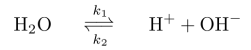

People in my lab sometimes want to be able to typeset the equation for a reversible chemical reaction in LaTeX:

I've created a macro that allows you to typset that as follows:
{\rm H}_2{\rm O} \rates{k_{\rm 1}}{k_{\rm 2}} {\rm H}^+ + {\rm OH}^-
Here is the macro definition:
\def\longrightharpoonup{\relbar\joinrel\rightharpoonup}
\def\longleftharpoondown{\leftharpoondown\joinrel\relbar}
\def\longrightleftharpoons{
\mathop{
\vcenter{
\hbox{
\ooalign{
\raise1pt\hbox{$\longrightharpoonup\joinrel$}\crcr
\lower1pt\hbox{$\longleftharpoondown\joinrel$}
}
}
}
}
}
\newcommand{\rates}[2]{\displaystyle
\mathrel{\longrightleftharpoons^{#1\mathstrut}_{#2}}}
Note that I have to use the \mathstrut command in the
defintion since otherwise the subscript on k1 seems
to be a bit too close to the arrow. I also go into displaystyle
automatically; this is not useful if you are in a different mode.